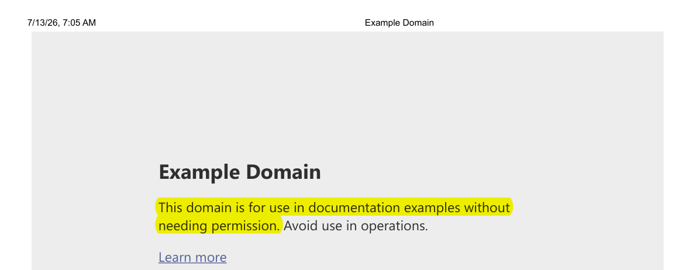

Part 1What it is, and how you use it
What track-changes gives you
track-changes is a suite of Claude Code skills for people who edit documents they are accountable for — lecture notes, exams, manuscripts, referee responses. When an AI assistant helps, two things normally go invisible: what it changed, and whether what it wrote is actually grounded in the source it claims. track-changes makes both visible and mechanically enforced.
1. Every AI edit is reviewable
Each change Claude makes to a tracked file is wrapped in a numbered yellow highlight you accept or reject — like Track Changes in Word, but enforced: an unmarked edit is refused before it can be saved.
2. Every sourced claim is verified
When Claude grounds a passage in a document, its cited interpretation stays in your text (green) while the supporting quote (gray) is checked, character for character, against the real source. A fabricated excerpt is refused — so a citation is never decorative.
Under the hood it is three cooperating skills: track-changes (the always-on
mark-and-review core), verified-import (/tc import, for bringing in vetted
material cleanly), and tc-polish (/tc polish, for cleaning up
voice-dictated prose). You stay the author; the AI is a copy-editor whose work you sign off on,
change by change — and whose sourcing you can open and check.
Commands
The suite adds two slash commands: /tc (with subcommands) and /draft,
grouped below by what you’re doing. New here? The short version is
a typical review pass, and the worked examples start
further down; nothing runs until you
install the suite and
turn it on for a folder.
Turn tracking on and off
/tc mark [<dir>]— Track a whole folder (drops the.tc-trackedmarker). The usual way to start./tc enable <file>//tc disable <file>— Track, or explicitly exclude, a single file./tc status [<file>]— Show whether a file is tracked and which rule decided it./draft— Pause tracking for just your next message, then it resumes by itself. For a large rewrite or brand-new draft that would be too noisy to highlight line by line.
Review and resolve changes
/tc list <file>— List every highlight by number with a preview of what changed. The natural start of a review pass./tc accept <file> <ranges>//tc reject <file> <ranges>— Keep or discard the listed highlights and remove the wrappers. Ranges are flexible:1-25,!7,!11means “1 through 25, except 7 and 11.”/tc accept-all <file>//tc reject-all <file>— Resolve every highlight at once./tc edits [<file>]— The other direction: you edited the document yourself, and this shows Claude exactly what you changed since it last wrote, so it can proofread just that and return its corrections as ordinary highlights. Your text stays clean; only Claude’s corrections to it are marked. It reports and never edits. With no file, it lists every file you’ve changed. See below.
This is also how you review a long region: edit its body, delete the parts you reject, then/tc accept N— which keeps the body as you left it. Worked through here.
Ground writing in a source
/tc source <file>#<locator> [<target>]— Stage a source slice (a line range, a PDF page range#p.12-14, or a whole file); Claude then writes the verified gray excerpt + green interpretation. A citation can be named by BibTeX key:/tc source @daskin2013 p.114./tc manifest [<doc>]— Regenerate the document’s source manifest invalidation/<doc>.sources.md— the durable, committable record of every sourced passage.
Bring in trusted material
/tc import <source>[#L<a>-L<b>] [<target>]— Insert vetted material and let it land clean (no highlights), reproducing the source faithfully; Claude marks only a genuinely significant change. See below./tc coverage <doc> <source>— Audit a whole document against the source it was built from and name any content the conversion dropped. The same completeness check/tc importapplies per-insert, run over the finished file.
Clean up voice dictation
/tc polish [<file>]— Clean up voice-dictated prose (recognition slips, grammar, dropped words); every fix lands as an ordinary highlight you review. It never rewrites a token it can’t recognize as plain prose (jargon, code, math): it leaves that alone and flags it. (Part oftc-polish.)
Every accept or reject is recorded as a deliberate decision, so the skill never silently undoes
a choice you made — even if Claude edits the same passage again later. And
accept / reject resolve only committed text, so an
approval always attaches to what git shows was reviewed — and they commit the file
for you when it isn’t, naming what they did and touching nothing else in the
repository. You are never left holding a commit step.
A typical review pass
Once the suite is installed and a folder is marked, there is nothing to launch and nothing to remember mid-task — the enforcement runs on its own. A working session settles into a short loop, and the only real decision is how you want to correct the AI: by telling it, or by editing the text yourself. Both lanes end in the same place.
- Work with Claude normally. Don’t invoke anything. Every change it makes to a tracked file arrives as a numbered highlight, because the alternative — an unmarked edit — is refused at the save.
- See what’s waiting —
/tc list. Every pending highlight by number, with a preview of what changed. - Correct it, one of two ways.
- Tell Claude. “Accept 1 through 9 except 4, and reject 4” — or
run
/tc accept 1-9,!4and/tc reject 4. Best when the AI’s proposals are mostly right and you are ruling on them. - Or just fix the text yourself, in your editor, and then run
/tc edits. Best when explaining the correction would take longer than making it. Claude sees exactly the lines you touched, proofreads only those, and returns its suggestions as new highlights — while your own wording stays clean and unmarked. - Either way, for a long block Claude wrote as a single numbered region, editing it
is the review: fix what is wrong, delete what you reject, and
/tc accept Nkeeps the body as you left it. There is no partial-reject command because deleting a passage already is one.
- Tell Claude. “Accept 1 through 9 except 4, and reject 4” — or
run
- Resolve, and repeat.
/tc accept//tc rejecton what Claude proposed, then back to step 1. Every decision lands in.tc-history.mdalongside the document.
You never have to commit anything by hand. Resolution runs on committed text, so
that every approval attaches to something git can show was reviewed — but the tool
performs the commit, names it on screen, and touches only the file you named.
Unrelated work in the same repository is left alone, and your writing and Claude’s corrections
still land as separate commits. (Prefer the old behaviour, where the commands refuse until you
commit? Set TC_NO_AUTOCOMMIT=1.)
The other commands slot into that loop rather than replacing it.
/tc source is how new writing gets grounded in a document or
a web page; /tc import brings in material you have already
vetted without turning it into a wall of highlights; /tc polish cleans up a stretch of
voice dictation. All three produce ordinary highlights, so they land in step 2 and you review
them the same way. And when a change would be too large or too structural to read as highlights
— a brand-new draft, a wholesale rewrite — /draft pauses tracking for
exactly one message.
/tc polish or /tc edits? Both end with Claude’s
corrections as highlights over prose you wrote, and the difference is whose text is under review.
/tc polish takes your dictation and does an editorial pass on it.
/tc edits is scoped by what you changed since Claude last wrote the file
— which git cannot work out on its own, because your edits and the AI’s sit
undifferentiated in the same dirty file. Use polish after dictating; use edits after hand-editing,
especially when correcting the AI’s own draft.
Part 2Why it works, and what it looks like
Why it exists
A vetted document has often been refined by its author over years. When an AI rewrites part of one, the change is invisible — it blends into text you already trust, and a single quiet, wrong edit can undermine confidence in the whole file. Worse, an assistant can write a fluent sentence attributed to a source that does not say it: the classic failure of AI-assisted scholarship is a citation that reads perfectly and does not support the claim.
track-changes answers both. It refuses to let Claude save an edit to a tracked file unless the changed characters are wrapped in a highlight you can see, and — for anything Claude grounds in a source — it refuses the write unless the quoted excerpt is genuinely present in that source. Every highlight, every accept-or-reject, and every verified excerpt is recorded in a plain-text log kept alongside the document.
Enforced, not just requested — which is why it works for AI agents
You could simply ask an AI assistant to mark its edits and quote its sources accurately. But an instruction is advisory: over a long task an assistant can forget it, drift from it, or report a compliance it never delivered — and you would have no reliable way to tell. track-changes does not depend on the assistant’s cooperation. The guarantees are enforced mechanically, at the moment of the write, by a hook Claude Code runs before any save:
- An unmarked edit to a tracked file is refused — and the assistant
cannot switch tracking off for itself. Only you can, and only for a single message
(
/draft). Every AI change is marked whether or not the assistant remembered to. - A passage presented as grounded in a source is refused unless its quoted excerpt is genuinely present in that source and the passage carries a citation a reader can follow. A sourced claim is either real and attributed, or it doesn’t land.
That is what makes the common case trustworthy: handing the document to an AI agent and relying on the record afterward. The enforcement holds no matter how the agent was prompted, so your role narrows to what only you can do — deciding which files are in scope, and reviewing the marked changes and verified excerpts the agent produced. The skill turns “please track your edits and cite your sources” from a hope you cannot audit into a property of the file: an unmarked edit never lands, and a fabricated citation never lands. (It cannot force an agent to decide a claim needs a source — but every source it does cite is verified, and the manifest makes what it grounded, and in what, auditable at a glance.)
See it: an AI edit, reviewed
The boxes below render the actual markup — this is what you see in VS Code’s markdown preview (Ctrl+Shift+V) or any viewer that displays markdown.
Claude proposes two changes
Change 1 inserts “often”; change 2 strikes “the optimal” and
proposes “a near-optimal.” Claude was allowed to save this only because every
altered character sits inside a highlight — an unmarked edit would have been refused. Each
number is a handle: tell Claude “accept 1, reject 2” (or run
/tc accept 1 and /tc reject 2), and the accepted change stays while the
rejected one rolls back to your original wording. Both decisions — with timestamps and the
old and new text — are appended to a .tc-history.md log in your project, so
git diff and git blame surface AI-attributed changes months later.
See it: when you edit the document yourself
Reviewing an AI draft, you often don’t want to describe a fix — a wrong term, a claim that’s backwards — you just want to correct it. So you do, straight in your editor. That leaves an awkward gap: your edits are unmarked and unproofread, and Claude has no idea which of the file’s hundreds of lines you touched. Asking it to re-read the whole document invites it to “improve” passages you never asked about.
/tc edits closes the gap. Say Claude drafted a paragraph on the p-median problem, and
reading it you fixed two things by hand: weighted should have been
demand-weighted, and the claim about the greedy algorithm was simply wrong. Then:
/tc edits
What comes back is a brief for Claude, not a verdict on your writing. It answers three things: which lines you touched and how they read before and after, which tokens must be left alone, and — last — that none of it has actually been proofread yet. This is its real output (only the leading directories of the path are shortened):
tc edits — …/lectures/facility-location.md
baseline: snapshot gen 0, captured 2026-08-04T11:31:53Z
2 edited span(s), 5 line(s) changed (2 content, 0 whitespace-only):
- lines 6-8 +3 -3 content
-minimize the total weighted distance between each demand point and the facility
-serving it. It is NP-hard in general, but instances with a few hundred candidate
-sites are routinely solved to optimality by modern MIP solvers.
+minimize the total demand-weighted distance between each demand point and the
+facility serving it. It is NP-hard in general, but instances with a few hundred
+candidate sites are routinely solved to optimality by modern MIP solvers.
- lines 11-12 +2 -2 content
-substitution. The greedy algorithm always finds the optimal solution when the
-demand weights are uniform.
+substitution. The greedy algorithm rarely finds the the optimal solution, even
+when the demand weights is uniform.
no tracked REGION overlaps an edited span (inline marks are not checked — see /tc list)
protected: none in the edited text (6 new token(s))
lint: not configured. configure a project linter in .tc-edits.json: {"lint": {"command": ["python", "tools/lint.py", "{file}"]}}
next mark number: 1
NOT PROOFREAD: nothing above has been checked for grammar, dropped words, or sense.
Read the span diffs, then mark any correction as 1+.
It never edits the document. It reports, and every correction that follows goes through the ordinary highlight-and-review path.
So Claude now proofreads five lines instead of a whole file, and catches what you introduced while typing — a doubled “the,” and weights is for weights are. Its corrections come back as ordinary numbered highlights:
And this is the part worth being precise about, because it is the reverse of everything else on this page: your text is not marked. Only Claude’s corrections to it are. Your “rarely” and “even when” sit in the paragraph as plain, unhighlighted prose — you are the author and you don’t review yourself. What lands as highlights 1 and 2 is only what the AI is proposing on top, and you accept or reject those exactly as always. The enforcement is unchanged: Claude physically cannot slip an unmarked change into that paragraph while “just fixing your typos.”
Then you rule on the two highlights, and that is the end of it:
/tc accept 1-2
No commit step of your own. Resolution has to run on committed text — so that every approval attaches to something git can show was reviewed — and the tool commits the file for you before resolving, naming what it did. Your edits and Claude’s corrections still land as separate commits, so the two authorships stay distinguishable in history.
That is the whole loop: you edit → /tc edits → Claude marks its
corrections → you accept or reject. Two commands, both yours, and nothing left pending.
Why a snapshot and not git. The baseline is the file as Claude last left it, captured automatically on every AI write. It has to be: in one uncommitted file your edits and the AI’s sit interleaved, so no git command can isolate yours — which is the one thing this report needs to know.
The report is deliberately literal about what it did and didn’t check, and it ends by
saying so. Every line above NOT PROOFREAD is a mechanical result —
which lines moved, which tokens are off-limits, whether a region was touched, what a linter said.
None of it is a reading. So the report closes by naming the work that is left rather than trailing
off after a list of clean-looking checks: the grammar slips in this example were caught by Claude
reading the passage, which is the step the last line exists to demand.
protected: lists tokens Claude must leave alone — domain
jargon, code, math — because a copy-editor “fixing” a term it doesn’t
recognize is worse than leaving it. “None” means nothing needed protecting, not that
nothing needed fixing. The lint: line is an invitation: a project can register its own
checker in a .tc-edits.json file and have its house rules enforced inside the edited
lines only. And if one of your edits had landed inside a tracked region, the report would have named
the region and shown what changed within it, rather than leaving you to notice.
See it: a block Claude wrote, that you edited before accepting
For a substantial new passage — a new subsection, a worked derivation — Claude
doesn’t scatter inline highlights through it. It wraps the whole thing as one numbered
region, which resolves as a unit: /tc accept 1 or /tc reject 1,
all or nothing.
That looks like it forces a bad bargain. If most of a long block is right and one claim is wrong, accepting swallows the error and rejecting throws away good writing. It doesn’t — and this is the most useful thing to know about reviewing AI work here: the block is yours to edit before you accept it. Accepting keeps whatever the body says at that moment.
Here is a short region as it renders, with its number in the corner:
Vetted paragraph the author wrote last year.
The p-median problem minimizes total demand-weighted distance. The greedy algorithm always finds the optimal solution. Vertex substitution is therefore rarely needed.
The same thing as markdown, through four states. Every one below is real: the commands were run against the installed skill and the files are its actual output.
1. As Claude wrote it. One region, mark 1. The vetted paragraph above it is untouched.
Vetted paragraph the author wrote last year.
::: {.tc-region tc-n="1" tc-prov="authored"}
The p-median problem minimizes total demand-weighted distance.
The greedy algorithm always finds the optimal solution.
Vertex substitution is therefore rarely needed.
:::
2. You edit the body in place. The second sentence is wrong, so you rewrite it. The third depended on it, so you delete it — deleting part of a region is how you reject that part. There is no partial-reject command because you already have one. And, being human at a keyboard, you mistype “necessary.”
Vetted paragraph the author wrote last year.
::: {.tc-region tc-n="1" tc-prov="authored"}
The p-median problem minimizes total demand-weighted distance.
The greedy algorithm rarely finds the optimal solution, so vertex
substitution is usually neccessary.
:::
Running /tc edits here reports that your edit landed inside region 1
and shows what changed within it — useful on a region long enough that you want confirmation
the edit went where you meant.
3. You run one command. It does the rest. Not
/tc accept — just /tc edits, the same command that produced the report
above. track-changes commits your edits and accepts the region for you, and tells you
it did:
/tc edits facility-location.md
tc: committed facility-location.md — "Instructor edits: facility-location.md"
tc: only facility-location.md was committed; any other changes are untouched.
tc: accepting region(s) 1 — you reviewed them by editing them.
tc: 1 mark(s) accepted in …/facility-location.md: 1
tc: committed facility-location.md — "track-changes: accept region(s) 1 in facility-location.md"
tc: your text is committed and settled. Anything Claude proposes
from here arrives as marks for you to accept or reject.
The commit is not a chore you were left with — resolution has to run on committed text so that every approval attaches to something git can show was reviewed, and the tool now satisfies that itself. It commits only the file you named: other work in progress elsewhere in the repository is left exactly as it was. Your edits and the acceptance land as two separate commits, so your writing and the mechanical change stay distinguishable in history.
Vetted paragraph the author wrote last year. The p-median problem minimizes total demand-weighted distance. The greedy algorithm rarely finds the optimal solution, so vertex substitution is usually neccessary.
The wrapper is gone and the body is exactly what you left: your rewrite kept, the
sentence you deleted still deleted, the first line — which you read and were happy with —
kept as Claude wrote it. accept never asked who wrote the body. So editing the region
is the review, and accepting it ratifies the version you edited; the lines you left alone are
approved by the fact that you read them looking for the ones that weren’t.
4. Claude cleans up after you — and this is where you re-engage. Your rewrite carried a typo. The correction is Claude’s, not yours, so it arrives as an ordinary highlight while your prose stays plain:
One highlight, over the four characters that changed. Everything around it —
“rarely,” “so vertex substitution” — is your writing and carries no
mark, because you are the author and you do not review yourself. The markup behind it, if you want
it: <mark><s>neccessary</s>necessary</mark><sup>1</sup>
— mark 1 again, because resolving a mark frees its number.
This is the only point in the round where you have a decision to make. Accept it,
reject it, or edit again and repeat. /tc accept 1 works without any commit ceremony
either — it commits the pending state for you first, the same way.
The order matters, and mechanically so. Polish comes after the accept, not before. Inside a region body the gate counts every line as already covered by the region’s own number, so a change Claude makes in there needs no highlight and nothing in the document shows it — measured, not assumed. Once the wrapper is gone the ordinary rule applies again and an unmarked change to your prose is refused, which is what makes step 4 reviewable. Edit, commit, accept, then ask for polish.
It is not untraceable, though. Every edit Claude makes inside a region body is recorded in
.tc-history.md, and /tc accept tells you when the region
you are accepting had its body modified after it was written — so if the order above does get
reversed, you find out before the wrapper comes off rather than after. It is a notice, not a refusal:
Claude is still free to revise a region it wrote, which is how a draft improves before you ever see
it.
One caveat if the region is green rather than amber — a passage grounded in a source. Accepting it also checks that anything the body gained since Claude wrote it still has a basis in the verified excerpt, and names what doesn’t, so an edit can’t quietly widen a claim the citation is standing behind.
See it: AI writing grounded in a source
Say you ask Claude to add a sentence to a lecture, supported by a report on your shelf. You point it at the source and the page range:
/tc source @sol2024 p.8 freight-lecture.md
Everything below is the actual output of that command — a real source PDF, the real hook, and the skill’s own stylesheet; nothing here is a mock-up. First, in the source itself the used sentence is highlighted, so the document folder becomes self-validating (this is the bundled annotator’s real output on page 8 of the report):

state-of-logistics-2024.pdf, p. 8 — the one sentence the lecture draws on, highlighted in place.Then, in your lecture, Claude writes two blocks: the verbatim excerpt it relies
on (gray, temporary scaffolding — a contiguous passage for context, with the load-bearing
sentence underlined to mark exactly what is being sourced), and the
sentence that stays in the document: its interpretation, carrying the citation
(green, resolved from the @sol2024 BibTeX entry):
U.S. business logistics costs reached $2.3 trillion in 2023, about 8.7 percent of GDP. Transportation represented 45% of total U.S. business logistics costs in 2023. That made it the single largest component of the logistics bill, ahead of inventory-carrying and administrative costs.
Transportation is the single largest component of U.S. business logistics cost (CSCMP 2024).
That closes the circle: document → highlighted source sentence → verbatim excerpt → cited interpretation, and the citation traces straight back. Two things the skill is strict about. First, the citation is required: the hook refuses a “sourced” region with no citation a reader can follow, and when the source is named by a BibTeX key the region must cite that key (a token buried in a comment or code span doesn’t count). Second, keep the green region scoped to what the source actually supports — the source backs “transportation is the largest cost,” so that is all the cited sentence claims; any further inference (say, where optimization pays off) belongs in a separate, un-cited sentence, so one citation never quietly vouches for more than its source does. And “verbatim” is not a matter of good behavior: before the write is allowed, track-changes re-reads the source and checks the excerpt is actually present. If Claude misremembered the figure — say it wrote 62% — or invented a quote wholesale, the save is refused and the discrepancy named (this is the hook’s actual message):
.tc-verbatim excerpt is NOT contained in the staged source @sol2024 p.8 — it looks fabricated or mismatched. Excerpt (normalized, first 80 chars): "Transportation represented 62% of total U.S. business logistics costs in 2023." Re-stage with `/tc source` against the correct slice. The staging record is preserved.That is the point: a hallucinated quote wearing the “verified” style is exactly the
failure that would make such a scheme worse than nothing, so the excerpt is verbatim by
construction, not by discipline. Sources can be plain-text files, PDFs, or Word documents,
and a citation can be named by its BibTeX key — /tc source @daskin2013 p.114
— so every AI claim about a cited paper carries a checked excerpt from that paper.
The gray scaffolding is temporary; you delete it once you’ve confirmed the passage (at
submission, for a manuscript). What stays in the document is the ordinary, properly-cited sentence
— and deleting the scaffolding loses no evidence, because the durable record lives elsewhere:
the citation itself, and a /tc manifest-generated list of every sourced passage
(excerpt, locator, and the text it supports) in a validation/ folder, with a bundled
tool that highlights each used passage in an annotated copy of the source PDF. The source
folder becomes self-validating.
See it: citing a web page that might vanish
Often the only source for a claim is a web page — a company blog post, a standards page, a
news article — and web pages move, change, or disappear. So when the source is a URL,
/tc source does one extra thing: it captures a dated snapshot of the
page and cites that, so the evidence survives even if the live page later rots. Point it at
a URL the same way:
/tc source https://example.com/ web-notes.md
Everything below is again the actual output of that command on this machine
— a real capture, the real hook, the skill’s own stylesheet. At stage time the skill
fetches the page (headless Chrome, printed to PDF; a text fetch as fallback) and writes a dated
snapshot into a private validation/sources/ folder. That snapshot — not the live
URL — is what the excerpt is checked against, so verification is deterministic and works
offline. Here is the captured snapshot, with the sentence the note draws on highlighted in place by
the bundled annotator:

example.com…2026-07-13.pdf — the page frozen at the moment it was
cited (note the capture date in the header), the one sentence the note relies on highlighted.Then, in your notes, Claude writes the same two blocks as for a file source — the verbatim excerpt it relies on (gray, with the load-bearing sentence underlined), and the sentence that stays, carrying a citation that records the URL and the access date:
This domain is for use in documentation examples without needing permission. Avoid use in operations.
The example.com domain is provided for documentation use without needing permission.1
The excerpt is verified against the captured snapshot exactly as a PDF or Word source would be
— the hook re-reads the snapshot text, never the network, so a fabricated web quote is refused
just the same. The manifest and the annotated source copy work unchanged, because a snapshot is just
a local file to the rest of the skill. Two safeguards specific to the web path: the snapshots stay
private (they live under validation/, not in what you publish), and the
fetch is SSRF-guarded — the URL is resolved and refused if it points at
loopback, private, link-local, or cloud-metadata addresses, and every redirect hop is re-checked, so
a hostile link can’t make the capture reach into your internal network. A page behind a login
isn’t fetched for you; save it yourself and source the saved file.
Part 3Installing, and living with it
Prerequisites
Claude Code must be installed — track-changes runs inside it, not separately. Install Claude Code first if you haven’t. The suite also needs Python 3 and curl (present on most setups by default); PDF and Word sources for the sourcing feature use Python libraries the installer notes.
Installation
- Start a Claude Code session — anywhere; the suite installs into your user profile, not a specific project.
- Give the install link to Claude Code:
Read https://mgkay.github.io/track-changes/bootstrap.md and follow the installation instructions inside it. - Confirm. Claude Code downloads all three skills, wires them into your configuration, and reports success.
- Open a new Claude Code session so the skills take effect.
Updating later. Run the same install command again. It checks the installed version and only replaces files if the published version is newer, so re-running is always safe.
Turn it on for your files
track-changes is off by default — it ignores every file until you opt in, per folder or per file. The usual way is to mark a whole folder at once, from inside Claude Code:
/tc mark /path/to/your/lectures
That drops a small .tc-tracked marker in the folder. From then on, every
.md / .qmd / .tex file in that folder is tracked. The
marker covers only its own folder — it never reaches into parent folders or subfolders, so you
control exactly what is watched. To track one file rather than a folder, use
/tc enable <file>.
How it works
You don’t run track-changes during normal work — once installed, it watches for edits on its own, through a hook Claude Code triggers before every save:
- It checks every save before it happens. If a change to a tracked file isn’t wrapped in a highlight — or a grounded passage’s excerpt isn’t present in its cited source — the save is refused and Claude is told what to fix. An AI edit can never land unhighlighted, and a sourced claim can never land unverified.
- It keeps a running log. Every highlight, every accept-or-reject, and every
verified excerpt is appended to the plain-text
.tc-history.mdnext to your document, so you — or a co-author or reviewer — can always see what the AI touched and what it relied on. - It stays out of the way otherwise. On files you haven’t opted in, and in
any turn you’ve paused it with
/draft, the checks do nothing. There is no separate app or window.
More the suite handles
Build from material you already trust — without drowning in highlights
Most of a new lecture or chapter is assembled from things you’ve already vetted; only a
little is genuinely new AI writing. /tc import inserts a source and lands it clean, so
only the new writing around it is highlighted:
/tc import chapter3.md#L10-L42 lecture-notes.md
Claude reproduces the content faithfully and marks only a change that alters meaning — an
added or dropped sentence, a changed quantity or term — while reflow and formatting stay clean.
An import is also checked for completeness: if the conversion silently dropped a
word, number, or symbol that was in the source, the write is refused and the missing token named
(override with --allow-partial). Where sourcing (above) proves an excerpt is
real, import proves a conversion is whole.
Hand the document to a reader, cleanly
Sharing the document for someone to read rather than review? Add ?clean=1 to
the shared link and the rendered page hides every highlight and reference number. The underlying file
is untouched, so your review state is preserved.
Add brand-new sections without breaking the page
Wrapping a brand-new heading or code block in an inline highlight would break how the document displays, so a new block is flagged with a single marker on the line just above it — you still see it’s new, and the page still renders. Larger new content becomes a single numbered region instead, resolved as one unit; reviewing one means editing its body and then accepting it. LaTeX uses an equivalent marked environment.
Catch half-finished edits at commit
If you keep documents in git, track-changes can optionally warn you at commit time when a file still has unresolved highlights — a safety net so partly-reviewed AI edits don’t slip into history. Off until you switch it on, and overridable per commit.
Pre-clean voice dictation in your editor — decap
Voice dictation sprinkles stray capitals mid-sentence. The suite bundles decap, a
deterministic filter that lowercases them while leaving sentence starts, acronyms, camelCase, and
protected terms alone. You run it in your editor, so it never goes through Claude and its
edits are deliberately not tracked — exactly right for a bulk, judgment-free
cleanup of your own dictation. It pairs with /tc polish: decap for the
instant mechanical pass, /tc polish for the editorial pass you review as marks.
decap installs automatically with the bootstrap (at
~/.claude/skills/track-changes/tools/decap.py). To bind it to a key in VS Code, paste
this to Claude:
Set up the bundled decap tool as a VS Code keybinding. Install the "Edit with Shell Command" extension (ryu1kn.edit-with-shell) if it isn't already installed; add an editWithShell.favoriteCommands entry with id "decap" that runs: python ~/.claude/skills/track-changes/tools/decap.py (use the full absolute path if ~ isn't expanded on my OS); set editWithShell.quickCommand1 to "decap"; and bind ctrl+alt+c to editWithShell.runQuickCommand1 in keybindings.json.
That binds Ctrl+Alt+C to run decap on the current selection. For manual
setup or another editor, ask Claude, or see SKILL.md in the
project repository.
Good to know
- It shows up wherever you already read. Highlights and sourced regions are standard HTML/CSS inside your document, so they render in VS Code’s preview, on GitHub, and in Quarto output — no special tool required.
- The record lives in your project. The audit log is plain text meant to be committed, so the AI’s edit and sourcing history is part of your normal project history. (Keep private source PDFs and their manifests in a folder you don’t publish.)
- It supports
.md,.qmd, and.tex. LaTeX uses equivalent\tc{...}and region markup, so highlighted changes and sourced passages survive a PDF build. - It’s light and quiet. The background checks add a fraction of a second per edit, and do nothing on files you haven’t opted in.
Learn more
The full installer manifest is in bootstrap.md. Source files and the complete file list live in the project repository.